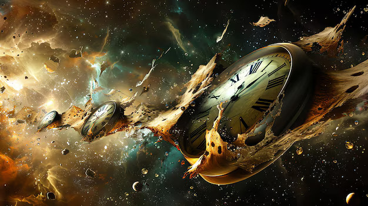

Fixed Timeline Theory
According to this theory, the past, present, and future are immutable. Time travel may be possible, but any actions taken by the traveler were always part of history.
Learn MoreDynamic Timeline Theory
Explore how time is fluid and changes to the past can rewrite the future. In this model, altering one event may ripple forward to affect everything that follows.
Learn MoreMultiverse Theory
Delve into the concept of infinite parallel universes created by time travel. Every decision may spawn a new reality — and travelers may never return to their original one.
Learn More